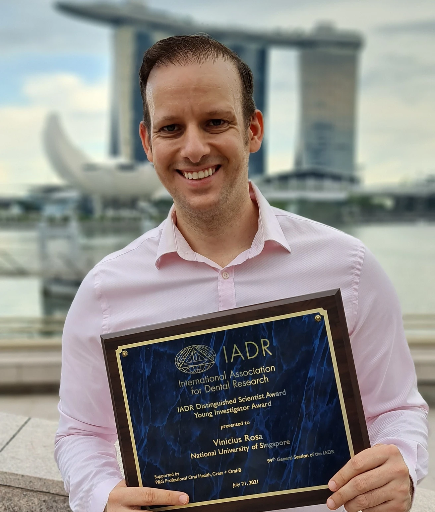

A/P Rosa receives the IADR Distinguished Scientist Young Investigator Award 2021
The distinction, granted by the International Association for Dental, Oral and Craniofacial Research, recognises early-career researchers who have already demonstrated exceptional scientific impact in the oral health field.

A/P Vinicius Rosa received the IADR Distinguished Scientist Young Investigator Award at the 2021 IADR General Session & Exhibition. The award recognises scientists in the early stages of their careers who have already made exceptional contributions to oral health and dental sciences research. It is one of the most competitive distinctions the IADR confers on emerging researchers.
A/P Rosa’s work in dental biomaterials — encompassing the development of GelMA-based hydrogels for dental pulp regeneration, calcium silicate cements, and strategies to improve the biocompatibility of restorative materials — earned him this international recognition at the peak of his emerging researcher stage.
Recognising the research that will shape the direction of dentistry’s future.
Receiving two IADR awards in the same year — the Distinguished Scientist Young Investigator and the Stephen Bayne Mid-Career Award — positions A/P Rosa as one of the most internationally recognised researchers of his generation in the dental biomaterials field.